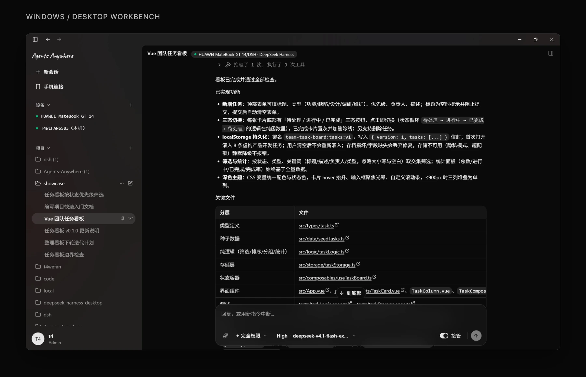

Agents Anywhere 拆解：多 CLI 集成与远程连接，能给 magic-agent 借鉴什么
它把「集成多种 CLI」和「远程控制」拆成两个正交问题：CLI 侧用一套 Runtime Protocol（Provider / AgentRuntime / HostClient 三层契约）把每个 CLI 关进适配器，上层不再写引擎分支；远程侧让工作设备上的 Connector 以「只出站」的长连接接入 Server，客户端永远只跟 Server 对话。对 magic-agent 而言，可以立刻 借用的是这两条边界，而不是它的具体协议。

docs/images/readme-workbench.webp。[1]结论速览
Agents Anywhere 是一个跨设备的开源 Agent 工作台：工作设备上跑 Connector（Python），手机、平板、Web 与桌面通过它连接 Codex、Claude Code 与 DeepSeek Harness（DSH）。它值得借鉴的不是功能清单，而是四条 结构性决策。[1]
-
集成靠协议，不靠分支。
Connector 应用层不允许知道 Codex IPC、Claude SDK 或任何服务端通知名；Runtime 适配器只能通过
RuntimeHostClient上报。这条规则由架构测试强制，而不是靠自觉。[2] - 远程靠反向连接，不靠内网穿透。 Connector 全程只出站，没有入站监听端口；「服务端调用设备」复用同一条长连接的反向通道，终端另有一条独立 的中继 WebSocket。[3]
- 状态靠 durable / live 二分。 只有会话元数据与时间线落库；会话状态、通知、目录、能力都是「运行时事实」，不落库、按需实时读。[2]
-
一致性靠游标加指纹，不靠序号对账。
每个时间线项带
contentHash，每段同步带fingerprint与cursor，两阶段提交成功才推进游标。[3]
magic-agent 已经把七家 CLI 统一到了同一条命令行，这一步和 Agents Anywhere 的 Runtime Provider 是同一个 问题的两种解法：magic-agent 用「一次性非交互调用 + 固定输出格式 + 稳定退出码」解，Agents Anywhere 用 「长生命周期 Runtime + 会话与轮次 + 事件上报」解。前者适合脚本编排，后者才能长出远程与多端。想要后者， 最省力的路径是照抄它的两层边界，见「对 magic-agent 的借鉴」。
全景架构
四个角色：客户端（Web、桌面、iOS、Android）、Server、工作设备上的 Connector、本机 Agent 运行时。关键约束是 执行位置：Agent 使用 Connector 所在机器的工作区与权限，客户端只负责控制与查看。Server 持有账号、 设备、项目、会话与时间线；Runtime 状态永远不落 Server 库。[1]
这套划分带来一个直接收益：客户端可以有四种实现（Next.js、Electron、Kotlin 与 Compose、SwiftUI），但共享 同一套 v2 协议与生成的 wire 类型，不需要为每一端重写业务语义。[1]
CLI 集成：Runtime Protocol 的三层抽象
项目文档对问题的描述很直白：Connector 代码曾把四件事混在一起，也就是入口（CLI 与桌面 RPC）、应用关注点（鉴权、 WebSocket RPC、配置、生命周期）、各家 Agent 的集成细节、以及面向服务端的通知名与报文形状。结果是模型选择、权限、 命令、Codex IPC 状态、时间线同步都靠 runtime 专属的条件分支长出来。[2]
解法是三层契约，把「运行时」变成可替换的插件边界：
| 层 | 关键类型 | 职责 |
|---|---|---|
| Provider | RuntimeProvider |
启动期职责：发现、配置 schema、配置校验、建实例、停实例、资源声明、source key。 |
| Runtime | AgentRuntime |
运行期职责：会话发现、时间线快照与同步、开会话、发消息、打断、命令、交互响应、模型与权限目录、能力。 |
| Host | RuntimeHostClient |
Runtime 回调 Connector 的唯一出口：通知、会话元数据、状态、时间线、通知项、同步状态读写、附件下载。 |
这套边界有一处很值得抄的工程习惯：项目把「不允许的依赖」写成了测试。架构文档规定适配器不得引用服务端通知名，
而 connector/tests/test_connector_architecture.py 会真的去检查这件事。规则能被 CI 拦住，才叫规则。[2]
实例化与注册也被收拢：runtimes/providers.py 里的 default_runtime_providers() 是唯一的注册点；
同一个 Provider 可以派生多个实例（例如多个 Codex Home），实例身份用不可变的 runtimeId 表达，名称只用于展示。[2]
接入一个新 CLI 的完整清单
这是整份拆解里最可复用的一段：新增一家 CLI 的答案，是一份有穷清单，而不是改一堆分支。
- 实现
RuntimeProvider：runtime_type、display_name、discover()返回类型描述符、get_config_schema()、validate_config()（语义校验并归一化，其结果是服务端权威配置）、create_runtime()。可选声明resource_claims()、session_source_key()、instance_policy（single 或 multiple）与推荐位次。 - 实现
AgentRuntime：identity、start与stop、会话读取、get_session_snapshot、prepare_session_timeline_sync、create_and_start_session、start_turn、steer_turn、interrupt_session、update_session_selections、模型与权限目录、命令列表与执行、respond_interaction。 - 只走宿主客户端上报：通知、时间线、状态、附件都通过
RuntimeHostClient，返回值用协议 dataclass 而不是裸字典。 - 注册并声明能力：加入
default_runtime_providers()，用能力集合声明自己支持什么；未实现的方法默认抛RuntimeUnsupportedError，从而优雅降级而不是崩溃。 - 对齐契约版本：配置 schema 与目录各带
revision；对外 RPC 面遵循 Runtime Control 契约。服务端只按能力与版本驱动界面，不猜引擎。
| 分组 | 方法 |
|---|---|
| 运行时 | runtime.discover · runtime.configSchema · runtime.config · runtime.validateConfig · runtime.start · runtime.stop · runtime.capabilities · runtime.commands · runtime.modelCatalog · runtime.permissionCatalog |
| 会话 | session.discover · session.create · session.sync · session.state · session.capabilities · session.notices · session.selections.update · session.commands · session.command.execute · session.send_message · session.steer · session.interrupt |
| 交互 | interaction.respond，审批与输入请求的统一回填入口，参数为 sessionId、noticeId、actionId、inputData |
| 本机能力 | fs.readDir · fs.readText · fs.writeFile · fs.prepareDownload · fs.uploadPreparedDownload · shell.exec · shell.task.start · terminal.create · terminal.write · terminal.resize · terminal.close · terminal.list · terminal.snapshot |
附件在 RPC 参数里只允许传 fileId，禁止内联 base64，真正的字节走独立的传输接口。这条规则把控制面与 数据面拆开了，避免控制通道被大 payload 撑爆。[3]
三家 CLI 的对接方式差异
同一套协议下，三家的实现路径完全不同，这恰好证明了抽象层的价值：如果协议足够窄，底层可以一个走官方 SDK、一个走 官方 app-server 的 stdio JSON-RPC、一个走自研的本地插件桥。
| 维度 | Claude Code | Codex | DeepSeek Harness |
|---|---|---|---|
| 对接方式 | 官方 Claude Agent SDK 子进程（ClaudeSDKClient 加 ClaudeAgentOptions） |
官方 openai-codex SDK，底层是 codex app-server --listen stdio:// 的 JSON-RPC |
自研 loopback TCP 插件桥，换行分隔的 JSON-RPC 2.0 帧 |
| 审批接入 | SDK can_use_tool 回调加 PreToolUse 钩子，拉模式阻塞等待用户响应 |
装 _approval_handler，把请求转成 accept、acceptForSession、decline 后回填 |
插件侧 session.respondInteraction，Connector 只搬运 |
| 历史来源 | SDK 会话读取加自定义游标（lastModified、fileSize、messageCount、lastMessageUuid） |
thread/turns/list，并用只读的原生 thread_history_1.sqlite 索引做 checkpoint 比对省流量 |
插件 session.getSnapshot 加事件同步 checkpoint |
| 同步模式 | polling | polling | events（streamId、batchSeq、projectionVersion 顺序校验） |
| 资源独占 | 无（single） | codex_home |
dsh_home 加 dsh_bridge_endpoint |
| 最大难点 | 子进程大缓冲（图片 base64 会重复出现，上限提到 80MiB）；异步审批要挂 Future 阻塞 | 多客户端写锁冲突：thread/resume 报已有活跃写者时直接判失败、消息不发 |
原生解析与时间线投影全在插件侧，Connector 只是协议搬运工；离线要自动重连 |
Codex 那一行藏着一条很成熟的产品判断：当原生 CLI 已经被别的客户端占用写锁时，Agents Anywhere 选择明确失败而不是
抢占，并把冲突上报为接管失败。[3] 对 magic-agent 同样成立：多个上层工具同时驱动同一份
codex_home 时，「谁在用」比「谁先到」更重要。
另一个可迁移的取舍是 DSH 的边界：runtimes/dsh/runtime.py 里写明「所有 DSH 读取与时间线投影都属于插件」，
Connector 只做协议搬运。这在短期看是「少做了一层归一」，长期看是把复杂度推给了上游。[2]
做自己的集成层时要明确选边：要么承接归一（像 Claude 与 Codex 那样），要么约定上游协议（像 DSH 那样），
但不要两边都做一半。
领域模型：durable 与 live 的切分
协议把会话相关数据分成两类。会话元数据（SessionMeta）与时间线（SessionTimeline）是
持久事实，由 Server 落库；会话状态（SessionState）、通知（SessionNotice）、模型与
权限目录、能力与命令列表是运行时事实，由 Runtime 拥有、不落库、按需实时读或经会话 WebSocket 推送。[2]
| 概念 | 真源 | Server 落库 | 说明 |
|---|---|---|---|
| 会话元数据 | 平台与运行时元数据投影 | 是 | 身份、connector 与 runtime 绑定、标题、工作目录、归档与置顶、已读位置。 |
| 会话状态 | 运行时实时投影 | 否 | 状态、选择项、错误；运行时不可达时 Server 可投影为 disconnected。 |
| 会话时间线 | 运行时归一投影 | 是 | 时间线项与恢复游标，是唯一的持久聊天上下文。 |
| 通知项 | 运行时实时投影 | 否 | 审批、输入请求等；历史展示归时间线，通知本身不留存。 |
| 模型与权限目录、命令列表 | 运行时本地读 | 否 | 界面打开选择器或用户输入斜杠时才按需读取。 |
与之配套的是一次刻意的破坏性重构：模型与权限选择从消息与会话请求载荷里移除，改由
SessionState.selections 承载。协议明确要求「已有会话发送消息时只带内容与附件」，模型或权限的变更必须
先更新会话状态，再由 Server 在派发时把当前选择传给运行时。[2]
这条设计对 magic-agent 有直接启发：现在 --engine 与模型是每次调用的一次性参数。只要同一个会话可能被
多个上层（脚本、桌面 App、远程端）驱动，选择就必须升格为会话状态，否则「谁改了模型」无法回答，也就会出现
README 里提到的那类「上层按版本号挑二进制却挑错了」的同类问题。
时间线归一与增量同步
各家 CLI 的原始事件形状差异极大（流式文本、命令输出、推理片段、补丁、压缩摘要），协议把它们统一成时间线项：类型为
turn.start、turn.end、message、tool、artifact、
marker、system，并保留来源溯源字段（会话、轮次、项 ID、事件名、派生 key、客户端消息 ID）。[2]
增量同步由三件事支撑：
- 内容指纹去重：每个平台侧项计算
contentHash（类型、状态、角色、内容四者的哈希），与上次成功入库的指纹比对，未变的直接跳过，重连与重启之后也成立。 - 游标加指纹：断点续传不靠序号，而靠指纹（例如文件修改时间与大小）加游标（例如消息数、最后消息 ID）。Codex 更进一步，用只读的原生 SQLite 索引比对每个轮次的元数据与更新序号，未变的历史连 RPC 都不用发。
- 两阶段提交：同步先产出快照与提交两个动作，快照送达且提交成功后才推进游标与指纹；摄入失败绝不推进已准备状态。项被删除或 checkpoint 版本不兼容时改用整会话替换快照，且活跃会话期间替换会被推迟。
值得注意的是「实时通知不推进扫描器 checkpoint」这条细节：正因为如此，最新的实时项可以被下一次扫描安全地重发一次。[3] 这是把至少投递一次的语义显式写进设计，而不是假装能做到恰好一次。
magic-agent 已经有 internal/agent/stream.go、streamjson.go、jsonextract.go 与
output.go 这一层，具备做同样归一的全部素材。差别在于它现在是「把一次调用的输出格式化给人看」，
而 Agents Anywhere 是「把持续事件投影成可增量同步的状态」。同一份解析代码，换一个输出契约就能复用。
远程连接：出站通道与配对鉴权
Connector 与 Server 之间只有一条主通道：出站 WebSocket WS /api/v2/connector/ws，其上跑自定义的
JSON-RPC 帧（request、response、notification）。因为工作设备不需要任何入站端口或
公网地址，这套设计对家庭网络、公司内网与容器都成立。[3]
| 通道 | 用途 | 触发条件 |
|---|---|---|
| 主 WebSocket | 服务端下发 RPC 请求、Connector 上报通知；心跳 20 秒，重连间隔 3 秒 | 默认通道 |
| HTTP ingest | POST /connector/ingest 批量提交通知 |
单帧超过 900KiB、属于强制走 ingest 的方法（如 timeline.sync）、或 WS 不可用 |
| 终端中继 | WS /connector/terminals/<id>/relay，交互式终端字节流 |
用户打开终端时按需建立，重连先回放有界 scrollback |
| 凭据 | 生命周期 | 存放与传递 |
|---|---|---|
| 配对码 | 一次性、带 TTL，状态有 claimed、expired、consumed | 用户在 Web 生成，Connector 轮询拉取 |
| connectorToken | 长期设备凭据，配对成功时下发 | 本地 ~/.agents-anywhere/connector.json，权限 0600；服务端只存哈希 |
| accessToken | 短期，默认 900 秒，提前 60 秒刷新 | Connector 用长期凭据换发，放在 WebSocket 的 Authorization 头 |
| ws-ticket | 短时票据，scope 为 dashboard 或某个会话 | 客户端先经 HTTP 换票再连 WebSocket，浏览器侧不携带长期令牌 |
安全边界上有几处细节值得照搬：本机机器状态记录里不含任何 token；WebSocket 关闭码 4001 且原因含 invalid、revoked、deleted 时判定凭据失效并停止重试；RPC 通道维护一个 generation 计数，旧连接迟到的回包会被丢弃， 防止陈旧响应注入到新会话。[3]
可靠性：事件补偿与实例租约
事件补偿
断线期间产生的通知不能丢。做法是一个 FIFO 队列（上限 1024，每批最多 64 条，20 毫秒合批窗口）：失败的批次 留在队头等待重试，因此是至少投递一次；408、429 与 5xx 视为瞬时错误按指数退避（上限 30 秒）， 401 刷新 token 后重试一次，被服务端判为 rejected 的批次直接丢弃以免死循环。发同步快照前会先把在途批次排干， 防止旧批次超车覆盖新快照。[3]
另外两处小而有效的机制：同一会话的助手消息项按 100 毫秒窗口合并，保证顺序；恢复接口只返回两种明确结果，要么
「确定性增量且不需要快照」，要么「无事件且需要快照」，游标格式固定为 seq:<revision>，且 revision 是
严格单调递增的持久整数。[5]
实例租约
同一个 Connector 被重复启动是最常见的运维事故，项目在本地与服务端各设了一道闸：
- 本地单实例：
~/.agents-anywhere/connector-runtime.json记录 PID、启动来源与进程启动时间；只有该 PID 仍然是那个 Connector 进程时才阻止启动，PID 被复用的无关进程不会误伤。互斥还叠加了一个由规范化路径哈希派生出的 loopback 端口绑定（49152 + hash % 16384）做跨进程仲裁。[3] - 服务端归属：接受连接的实例通过 RPC manager 抢占 Connector 租约，Redis 拒绝第二个活跃属主；指向其他实例的请求经 Redis Pub/Sub 路由到租约属主；心跳续租，断开或超时释放。[4]
- 跨实例资源独占：运行时通过
resource_claims声明独占资源（如codex_home、dsh_home），Supervisor 在启动前做资源仲裁，避免两个实例同时写同一份原生状态。[2]
900KiB 帧上限加 HTTP 降级；generation 计数丢弃陈旧回包；失败批留队头加合批窗口。这三件事与 Agent 协议无关， 是任何「本地进程对云端长连接」都需要的底座。
Server 与多端实时同步
Server 是 FastAPI 应用，内部分四层：core（领域模型与鉴权原语）、services（用例编排）、
infra（PostgreSQL 仓储、Redis 协调、WebSocket RPC、文件）、api（路由与错误映射），
由 app.py 做组合根装配；层间边界同样由架构测试守护。[4]
南向数据流是整份设计里最值得理解的一段：
- Runtime 适配器把原生事件归一，通过宿主客户端上报。
- Connector 以 WebSocket
notification帧上报；服务端按会话 lane 保序并合并。 - 通知服务分发到各处理器，进入时间线写缓冲或直接写 PostgreSQL。
- 时间线 broker 经 Redis Pub/Sub 的
timeline:<sessionId>频道广播。 - 客户端会话 WebSocket 把事件推给浏览器或 App。
时间线写入不是逐条落库：TimelineWriteBuffer 从 PostgreSQL 租约区段（默认 4096）分配持久序列号，Redis
承担已接受但未落盘的 upsert 与序列头，默认 1 秒刷盘；一致性敏感的读会先隔离并刷盘到 PostgreSQL。[4]
| 类别 | 事件 |
|---|---|
| 持久类 | session.subscribed · session.meta.updated · timeline.item_created · timeline.item_updated · timeline.snapshot · session.refetch_required |
| 实时类 | runtime.state.updated · runtime.notice.snapshot · runtime.notice.updated · runtime.capability.updated · runtime.catalog.updated · runtime.refetch_required |
| 保活 | keepalive，带服务端时间，15 秒无活动即发 |
去重用了三招：持久事件按 event_id 去重；实时投影事件按上一事件 ID 做相邻去重（所以 A 到 B 再回 A 仍然可见）；
能力事件按能力指纹去重。客户端侧还有一层 30fps 的合帧，Web、Android、iOS 是同构实现。[5]
| 表 | 说明 |
|---|---|
connectors | 设备与连接器：user_id、status、device_os、presence_instance_id、token_hash、revoked |
device_runtimes | 运行实例清单，主键为 (connector_id, runtime_id)，含配置与启用状态 |
projects 与 sessions | 项目（工作区路径、唯一约束）与会话元数据（运行时、外部会话 ID、标题、工作目录、seq、seq_allocated_high、last_read_seq） |
timeline_items | 主键为 (session_id, id)，含 type、status、role、order_seq、updated_seq、payload_json |
| 登录与配对 | oauth_accounts、oauth_clients、mobile_login_tokens、pairing_codes |
一个刻意的缺口：没有独立的 messages 或 turns 表。消息与轮次都由 timeline_items 的 type 表达
（turn、tool、approval、compact 等）。这减少了实体数量，代价是查询与索引要围绕这一张宽表设计。
部署形态很清晰：自托管最小形态是 PostgreSQL 加 Redis 加 Server；横向扩展时所有 worker 必须共享同一套 PostgreSQL、 Redis、签发密钥与文件后端，且实例 ID 不同，多 worker 场景强依赖 Redis，单进程内存兜底只被当作开发模式。[7]
对 magic-agent 的借鉴
先对齐现状。magic-agent 的强项是「把七家 CLI 的调用差异压平成一条命令」：引擎探测链、统一超时与重试、 固定输出格式、稳定退出码，这套东西本质上已经跨过了 Agents Anywhere 的 Provider 层。它还没有的是会话生命周期、 事件投影与远程连接。
| 维度 | magic-agent 现状 | Agents Anywhere 的做法 |
|---|---|---|
| 引擎抽象 | 每个引擎一组文件（claude.go、codex.go、dsh.go 等），靠探测链与开关拼装 |
Provider 与 Runtime 两段式契约，注册点唯一，能力自声明 |
| 调用形态 | 一次性非交互调用，产出固定格式结果 | 长生命周期会话与轮次，事件持续上报 |
| 输出与状态 | 格式化成给人或上层脚本看的结果 | 归一成可增量同步的时间线项，带内容指纹 |
| 权限与审批 | 权限模式已有（含统一文档），但偏静态配置 | 统一为通知项加 interaction.respond，阻塞等用户点按钮 |
| 远程 | 无；分发靠 npm 预编译二进制与 App 打包 | Connector 只出站长连，配对码加四级凭据 |
| 多端 | macOS App 打包，按版本号挑最新二进制 | 四端共享同一 v2 契约与生成的 wire 类型 |
1 · 引擎抽象升级为 Provider 与 Session 两段
优先借什么：Provider 只管「发现、配置 schema、校验、建实例」，Session 只管「会话、轮次、事件」，两者互不知道对方实现。
怎么落：在 internal/agent 里把现有引擎收敛成一个 Go 接口（Discover、ConfigSchema、ValidateConfig、StartSession、SendTurn、Interrupt、Capabilities），并保留现有一次性调用作为 Session 的退化实现（单轮即弃），这样 -e 的对外行为与退出码完全不变。
收益：新增第八家 CLI 只写一个实现，不动 CLI 层与输出层；--engines 里的 ok、bin、models 自然升级为能力与契约声明。
2 · 引入稳定会话身份，把选择项升格为会话状态
优先借什么：会话身份由连接器、运行时与外部会话 ID 一起哈希派生（sess_{runtime}_{hash 前 24 位}）；模型与权限从调用参数升格为会话状态。
怎么落：internal/session 已有会话文件与追加机制，在其中加一层「本地会话到引擎原生会话 ID」的稳定映射；把模型参数语义从「本次调用」改为「本会话默认，可按次覆盖」。
收益：多端或多上层同时驱动同一会话时，「谁在用哪个模型、谁批过哪次权限」变得可回答，也为后续远程接管留出了语义。
3 · 输出层改造成可增量同步的事件投影
结构借什么：时间线项的类型、状态、角色三元组，加 contentHash 去重，加指纹与游标断点续传，加两阶段提交。
怎么落：保留 output.go 作为「人类可读渲染」这一出口，另加一个「事件出口」：stream.go 与 jsonextract.go 已经是解析源，只需把解析结果投影成带稳定 ID 与内容哈希的项流。
收益：同一份解析代码同时服务终端渲染、事件持久化与远程推送；去重与增量成本从「重发全量」降到「按指纹比对」。
4 · 审批、权限与输入请求统一成通知项
结构借什么：一个通知项模型（类型、是否阻塞、是否需要响应、可选动作列表），加一个统一回填入口 respond_interaction。
怎么落：magic-agent 已有 internal/agent/permission.go 与权限模式文档，把它从「静态模式配置」扩展成「运行时可阻塞的交互对象」；Claude 走 Future 阻塞、Codex 走审批处理器回填、DSH 交给插件，三种实现收敛到同一个接口。
收益：远程场景的核心动作就是「回一个审批」，这个抽象不统一，远程能力就无从谈起。
5 · 远程先做最小闭环：只出站加配对码
优先借什么：Connector 只出站、无入站端口；配对码一次性加 TTL；长期设备凭据只下发一次并本地 0600；短期访问令牌提前刷新；客户端另外用短时票据连 WebSocket。
怎么落：magic-agent 已经是 Go 单体二进制，加一个子命令（例如 serve）拉起出站 WebSocket 即可，先只支持「查看会话、回审批、发下一条消息」三件事，不做文件与终端。
收益：不需要公网端口、不需要内网穿透，最小可用的远程能力可以在一周内跑通；后续文件、终端、多设备都是在这条通道上加方法。
6 · 补齐长连接的可靠性三件套
结构借什么：帧大小上限加 HTTP 兜底投递；连接代数计数丢弃陈旧回包；失败批留队头加重试退避；按窗口合并高频小事件。
怎么落：这三件事与具体 Agent 无关，可以直接照着实现一遍，并各自配一条单元测试（就像 magic-agent 现在为 keepalive、runcmd、spawnhook 做的那样）。
收益：把「断网、切网、服务端重启、旧连接迟到」这些必然会发生的场景，从线上事故降级为可预期的重试。
7 · 能力声明与版本治理写进协议
结构借什么：能力用带 scope 的 id 表达（会话级与会话内的静态能力分开），配置 schema 与目录各带单调递增的 revision，契约配 manifest 与校验脚本。
怎么落：--engines 的输出已经是一份事实来源，把它升级为带能力与 schema 版本的规范化输出；对上层（例如打包脚本按版本号挑二进制）暴露稳定的能力字段，而不是让上层猜。
收益：上层可以按能力驱动界面与降级，而不是按引擎名硬编码分支；这也是 README 里反复强调的「上层按版本号挑最新」能真正可靠的前提。
8 · 资源独占与本地单实例守卫
结构借什么：元数据声明独占资源（例如某份引擎 home、某个桥接端点），启动前仲裁；本机用 PID 加进程启动时间校验做单实例，而不是只看 PID。
怎么落：magic-agent 的引擎天然会写共享状态（各家的配置目录与凭据目录），把「这份资源被谁占用」显式建模，并在启动时报出冲突而不是静默并发写。
收益：避免多进程并发驱动同一 CLI 造成会话库损坏；也让 Codex 那类「已有活跃写者」的场景有一个统一的失败语义。
| 优先级 | 动作 | 主要收益 |
|---|---|---|
| P0 | Provider 与 Session 两段抽象；稳定会话身份与选择项；出站加配对码的最小远程闭环 | 拿到远程能力的前提，且不破坏现有一次性调用的对外行为 |
| P1 | 事件投影与内容指纹；审批统一为通知项；可靠性三件套 | 从「能远程」到「远程可用」：顺序、去重、断线恢复 |
| P2 | 能力与版本治理；资源独占与单实例守卫；文件与终端通道 | 多引擎、多实例、多端长期可维护 |
别踩的坑
这套架构的成熟度恰恰体现在它把踩过的坑写成了文档与测试。以下几条对任何「中转式远程 Agent」都适用。
2026-09-19 的实时事故记录显示：每个服务进程都订阅了全部时间线与仪表盘频道，Redis 输出缓冲超过默认硬限后订阅被断开， 而应用层当时没有恢复机制。修复手段是监督式重订阅（1 到 30 秒退避）、WebSocket 1012 恢复信号与超大 envelope 转为 重新拉取，但全量会话扇出与大 payload 仍被标记为待评估。[9]
仪表盘通道在连接建立时下发全量快照，变更只发失效通知再重发快照，delta 事件至今未实现；性能文档还记录了两百个会话 场景下能力发布仍会执行数百次查询。[5][8] 如果 magic-agent 要做「所有会话一览」，一开始就按增量设计，比事后改造便宜。
其一，隐私边界：走官方 Cloud 时，会话内容、时间线与上传附件会经过或存放在服务端，只有自托管才完全闭环。[1] 其二，迁移窗口：改序列列类型的那次迁移与旧写入端不兼容，必须停机迁移再启动，不能滚动混跑。[7] 其三，Redis 不是可选优化：多实例下没有它就直接拒绝启动，单进程内存兜底只是开发模式，崩溃会丢未刷出的负载。[7]
最后一条是方法论层面的：这套系统的复杂度大部分来自「多实例 + 多端 + 断线恢复」。magic-agent 如果只想解决 「在本机把七家 CLI 统一」，现在的形态就是对的；一旦要加远程，就要接受上面这些机制会从「可选优化」变成「必备底座》。 这也是最值得先想清楚的一次取舍。